London Travel Guide
A complete guide to discovering London's neighborhoods, must-see experiences, top attractions and practical travel tips.
Guide • Neighborhoods • Activities • Restaurants • Map
Historic pubs, food markets and iconic neighborhoods.
The Tube, Elizabeth Line and practical travel tips.
Tower Bridge, London Eye, Westminster and Big Ben.
Premier League, Wimbledon, West End and major events.
London is a cosmopolitan capital where history meets modern skyscrapers, iconic markets and some of the world's most famous museums.
From Westminster to Shoreditch, each neighborhood has its own identity and offers a different perspective on the city.
With its culture, gastronomy, theatre, shopping and architecture, London is one of the most complete urban destinations in the world.
Explore more cities in our travel destinations guide.
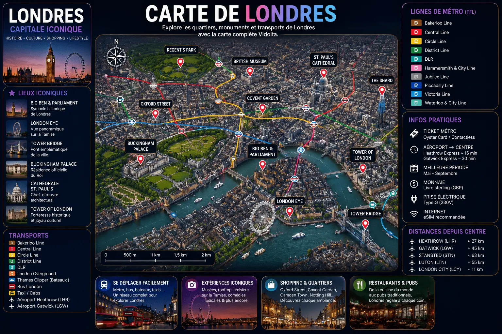
Beyond its famous landmarks, some experiences reveal a more local, authentic and memorable side of London.

Watching London's skyline from the Sky Garden is one of the city's most impressive experiences. (free reservation recommended several weeks in advance)

Greenwich Park offers one of the best views over Canary Wharf and central London. (especially recommended at sunset)

A peaceful canal-side neighborhood far from the usual tourist crowds. (ideal for a relaxing walk)

A historic covered market with remarkable architecture in the heart of the City. (featured in several productions and admired for its Victorian design)

The West End is one of the world's great theatre districts. (advance booking recommended for the most popular shows)
View Shows →
Admire London's most famous landmarks from the River Thames on a cruise between Westminster and Greenwich. Along the way you'll pass Big Ben, the London Eye, Tower Bridge, the Tower of London and the skyscrapers of Canary Wharf while learning about the history of the British capital.
Book the Cruise →Use the London Underground, red buses and the Elizabeth Line with ease.
View Oyster Fares →Stay connected throughout London with a fast and simple eSIM.
View eSIM Plans →London's famous black taxis remain one of the most comfortable ways to travel quickly around the city center.
Official Information →The best choice for a first visit. Central, lively and close to London's main attractions.
Restaurants, bars and nightlife. Perfect for enjoying London's vibrant energy.
A modern district along the Thames with exceptional views of central London.
Elegant, peaceful and close to several iconic museums. A reliable choice for a comfortable stay.
Creative London. Street art, independent cafés and a contemporary atmosphere.
Whether you're looking for a hotel with Thames views, an elegant address in Kensington or a stay in the heart of Covent Garden, London offers accommodations for every travel style.
From historic pubs to food markets and lively districts, London offers one of the most diverse culinary scenes in Europe.
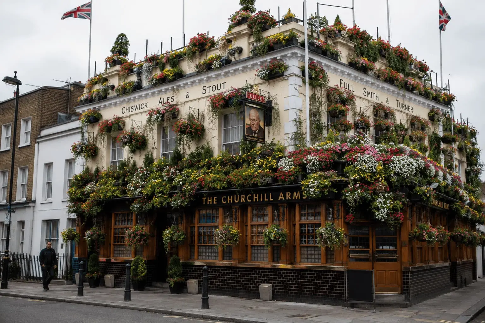
Discover the soul of London in legendary pubs such as The Churchill Arms and The George Inn. With flower-covered façades, centuries-old interiors and a truly British atmosphere, these venues are part of London's history and culture.
View The Churchill Arms →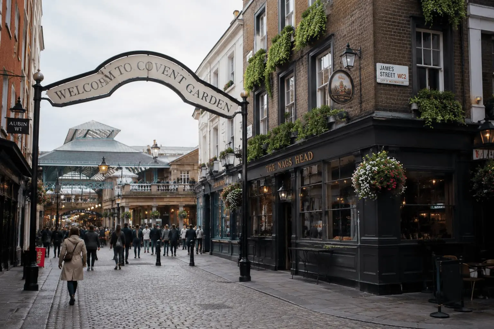
Two of London's best dining districts, featuring trendy restaurants, iconic venues and a lively atmosphere late into the evening.
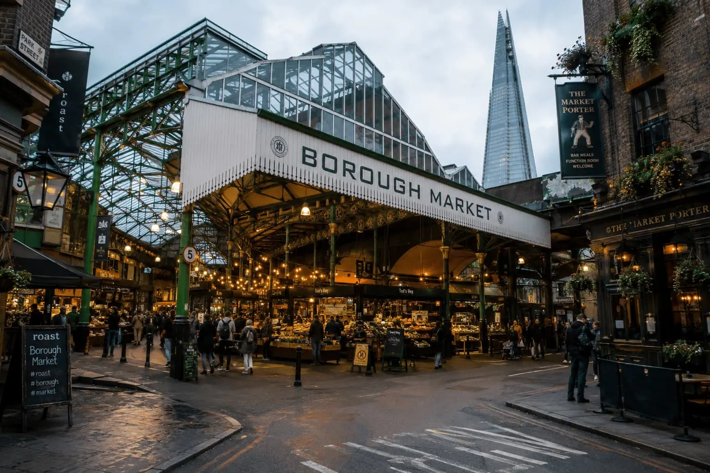
One of Europe's most famous food markets, perfect for tasting British specialties and cuisines from around the world.
Official Opening Hours →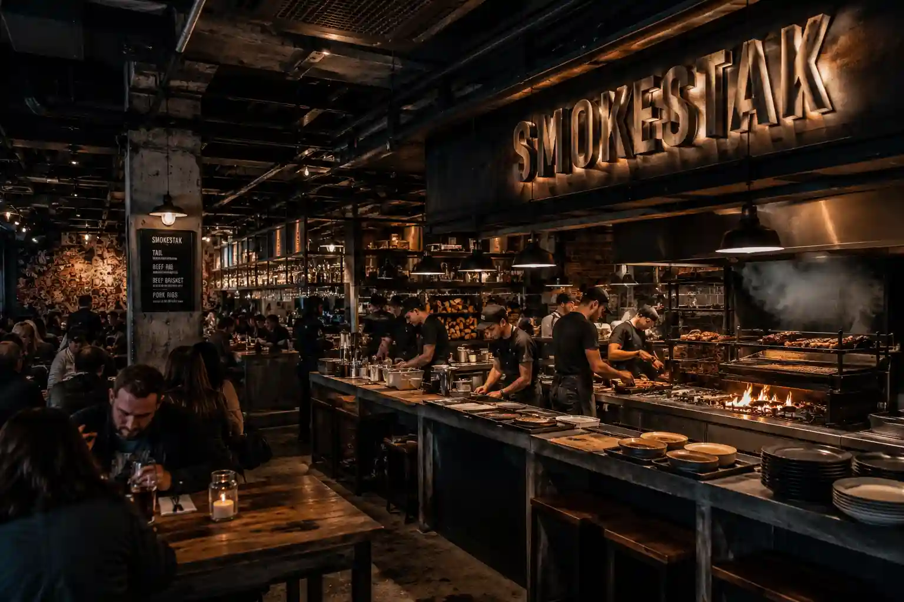
A must-visit Shoreditch restaurant, Smokestak is renowned for its slow-smoked meats cooked over wood fire and its distinctive industrial atmosphere. A favorite among barbecue lovers and fans of hearty cuisine.
View Reviews & Information →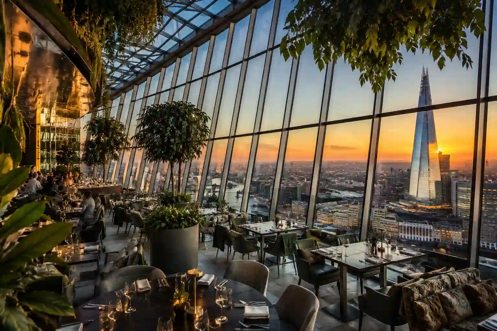
Located at the top of the famous Sky Garden, Darwin Brasserie offers a unique experience combining modern British cuisine with panoramic views over London. An exceptional setting overlooking the City, the Thames and the capital's iconic skyline.
View Reviews & Information →From historic landmarks to breathtaking viewpoints, some experiences are essential during a first trip to London.
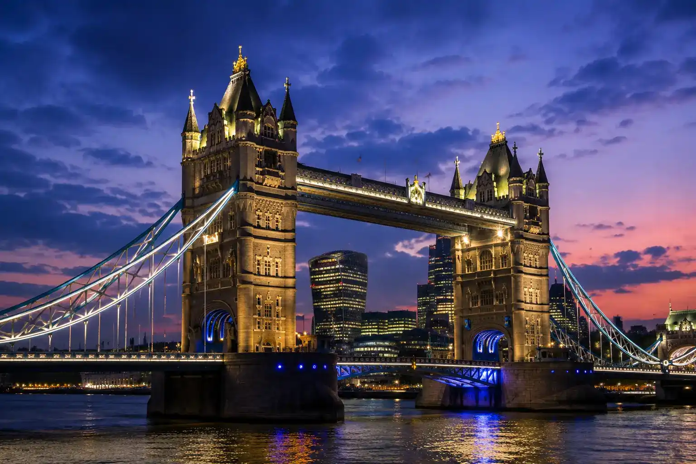
A true symbol of London, Tower Bridge impresses visitors with its neo-Gothic architecture and famous towers overlooking the Thames. Explore its panoramic walkways suspended 42 meters above the river, walk across the spectacular glass floor and discover the history of one of the world's most iconic bridges.
Book the Visit →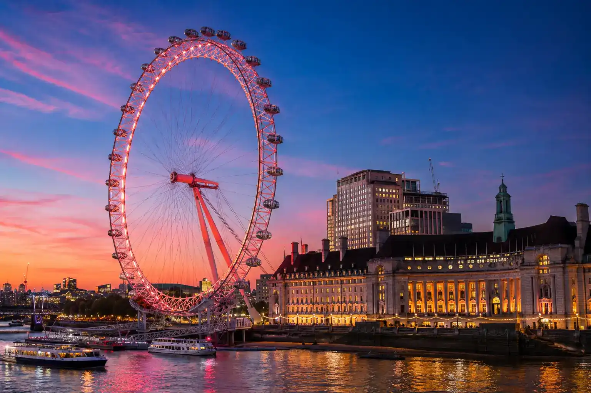
One of London's most famous landmarks, the London Eye offers spectacular views across the British capital. From its panoramic capsules, admire Big Ben, Westminster, Buckingham Palace, the Thames and the city's most iconic monuments.
Book the London Eye →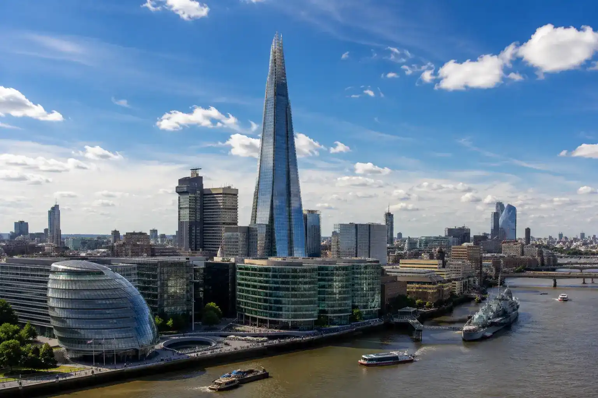
Standing 310 meters tall, The Shard dominates London's skyline and offers one of Europe's most impressive panoramic views. From its observation decks, admire the Thames, Tower Bridge, the City and London's landmarks stretching into the distance.
Book The Shard Experience →Discover the heart of royal and historic London with Westminster Abbey, the famous Big Ben and Buckingham Palace. This guided tour explores the most iconic symbols of the British monarchy and the United Kingdom's political power.
Book the Guided Tour →Few cities in the world offer such a concentration of sporting events. Football, tennis, rugby and NFL games keep London buzzing throughout the year.
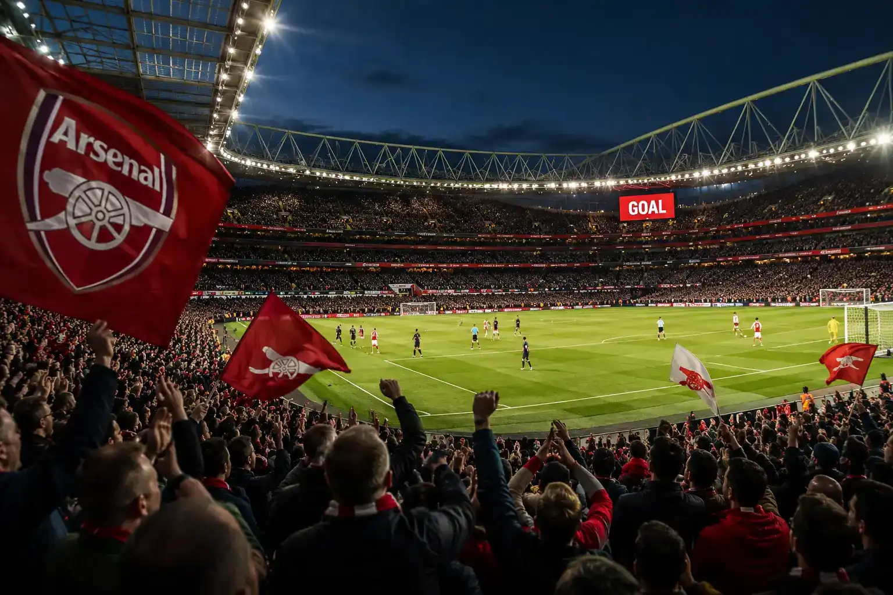
Arsenal, Chelsea, Tottenham, West Ham and Fulham: attending a match in an English stadium is one of Europe's most memorable sporting experiences.
View Tickets →Every summer, Wimbledon brings together the world's best players in the unique atmosphere of the most prestigious Grand Slam tournament.
View Tickets →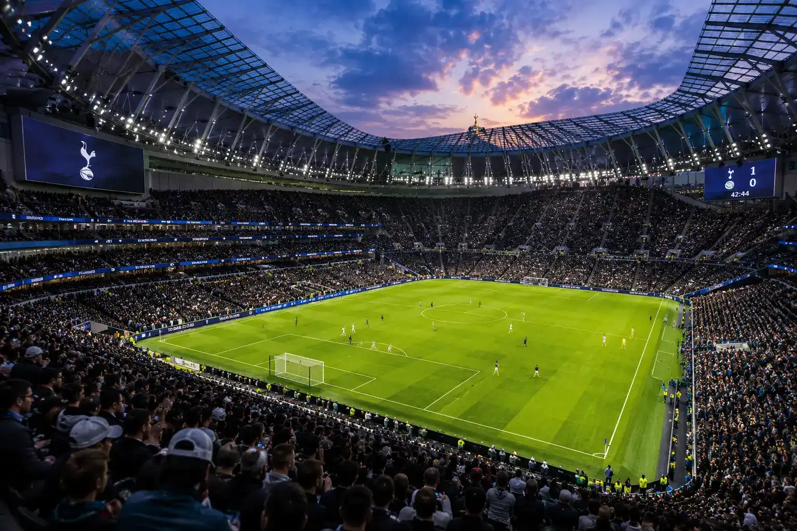
One of the most modern stadiums in the world. Football, NFL games, concerts and major events take place here throughout the year.
Book an Experience →English is the official language. Tourist areas are very accessible for international travelers.
The British Pound (£) is used throughout the United Kingdom. Card payments are accepted almost everywhere.
The UK uses Type G electrical outlets. Most European travelers will need an adapter.
Three to five days are enough to discover London's main districts and attractions.
Spring and early autumn generally offer the most pleasant conditions for exploring the city.
London is a relatively expensive destination. A comfortable budget is usually between €200 and €350 per day.
A cheaper hotel may seem attractive, but travel times increase quickly in a city as large as London.
Many visitors stay in central London, while Greenwich offers some of the most beautiful panoramic views of the capital.
The most sought-after free time slots are often fully booked several weeks in advance.
Even with an excellent Underground network, London is huge and journeys often take longer than expected.
Not every tourist pass offers good value. Always check whether it includes the attractions you actually plan to visit.
Three to five days are enough to discover London's main neighborhoods, landmarks and iconic experiences. A full week allows more time for Greenwich, Camden and the city's museums.
Covent Garden is often the best choice for first-time visitors. It is central, lively and provides easy access to London's main attractions.
London is one of Europe's most expensive cities, but there are many free attractions such as national museums, royal parks and several panoramic viewpoints.
Spring and early autumn generally offer the most pleasant temperatures and lighter crowds than the peak summer season.
Yes. Sky Garden, popular West End musicals, Wimbledon and some of London's most famous observation platforms are often fully booked days or even weeks in advance.
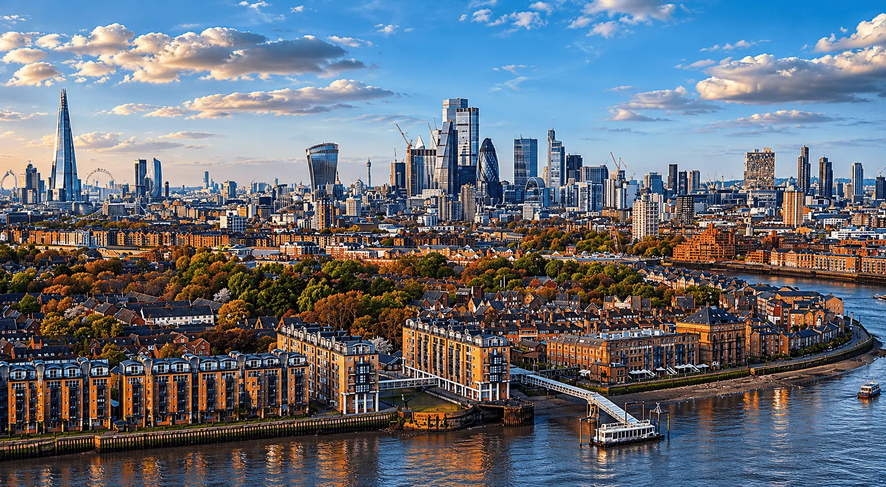